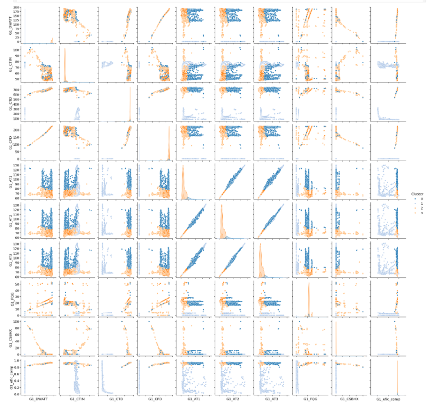
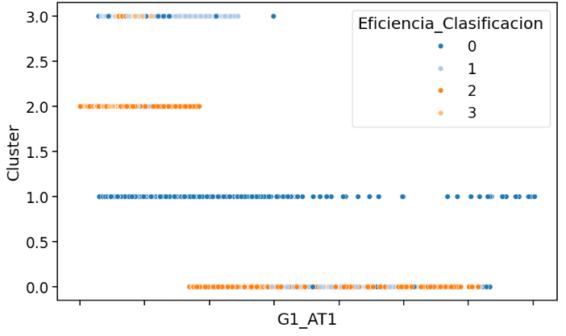

Este proyecto, desarrollado como parte de mi formación en Data Analytics, aplica técnicas de Machine Learning para clasificar los modos de operación del compresor de una turbina a gas en una central termoeléctrica. Utilizando datos extraídos del historiador industrial Exaquantum, que almacena registros en tiempo real desde 2018, se seleccionaron variables clave para evaluar el rendimiento del compresor.
El análisis permite identificar patrones operativos y detectar posibles desviaciones en la eficiencia de la turbina, facilitando el monitoreo proactivo y la toma de decisiones para mejorar el desempeño de la planta.

